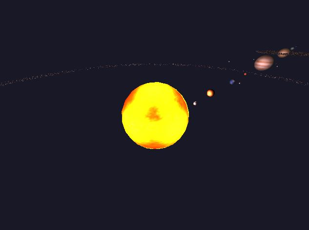
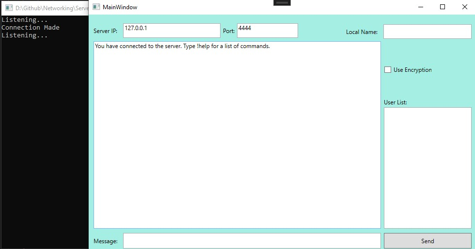

About me

Hi there, I am Declan, a final year Games Programming student at Staffordshire University. As a hobbyist drummer and guitarist, I love music, and as such, I am currently doing a disseration on making time-based effects and the Unreal Engine 5 Metasounds plugin more easily accessible.
During my time at Staffordshire University, I have learned a bit about DirectX11 in our graphics module, as well as pathfinding and decision making in the AI module during second year. As part of my final year, I am undertaking the audio programming module
during which I will be dealing with real-time audio generation, processing and mixing.
During my placement year, I worked for d3t as a Programming Intern. During the beginning of this role, I worked alongside a fairly large team on Vampire: The Masquerade - Bloodhunt, on which I am credited. My job was to learn the code base of the project, and to help out with bug fixing. Towards the end of this project
I worked with a smaller team to implement a new feature to enhance the user experience, and on tweaking an existing feature to get it up to the client's standards.
Throughout the rest of the placement, I worked alongside some great people on a number of different projects, ranging from helping out on an internal project by developing a tool, to spending some time creating a prototype for a client, which allowed me to witness and understand the planning and implementation of a game, and get a feel for the start to end development cycle.
I learned plenty of things during my placement, and vastly improved my ability to work as part of a team, and be able to adapt to whichever project I was put on.
Projects
Below are some of the projects I have completed or are currently in progress during my time at University:
Click on the images to be taken to the GitHub repositories.
Audio Programming Dissertation
As my final year project, I have decided to research how the Buchla Low Pass Gate works, and implement it within C++ and MetaSounds for Unreal Engine 5.
This gate is a type of filter that affects the timbre and amplitude of the wave being passed in, resulting in a bongo-like sound.
The end goal of this project is to prove that I understand what filters are and how they work, as well as my understanding of MetaSounds, by recreating this effect.
Optimisation Project

The purpose of this project was to optimise a program that we had been given. I did this by implementing multithreading and quadtrees. Thanks to my optimistations,
I managed to improve the speed of the program update loop by 23x from 32.62ms to 1.38ms by using a quadtree of depth 3 (or 32 even quadrants) and 16 threads.
All of the optimistation data can be found in spreadsheets in the GitHub repo.
Solar System - Graphics Project

The purpose of this project was to learn about the DX11 shader pipeline, and how to load textures from a file. I created a mostly accurate scale model of the solar system. Click the image above to be taken to the repo.
Networking Project

During this project, I had to create a client and server in C# that could connect and communicate. Alongside this, I also had to design a UI for the client. Click the image above to be taken to the project repo.
Contact
To contact me, please message me on either Twitter (X) or LinkedIn using the links below.
Also, check out my Github account also linked below.